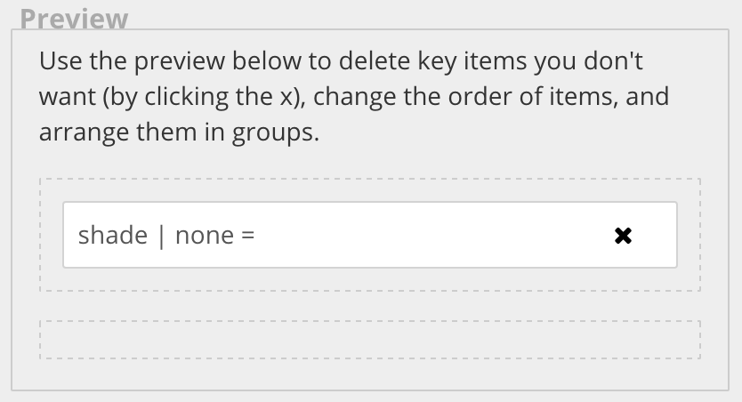
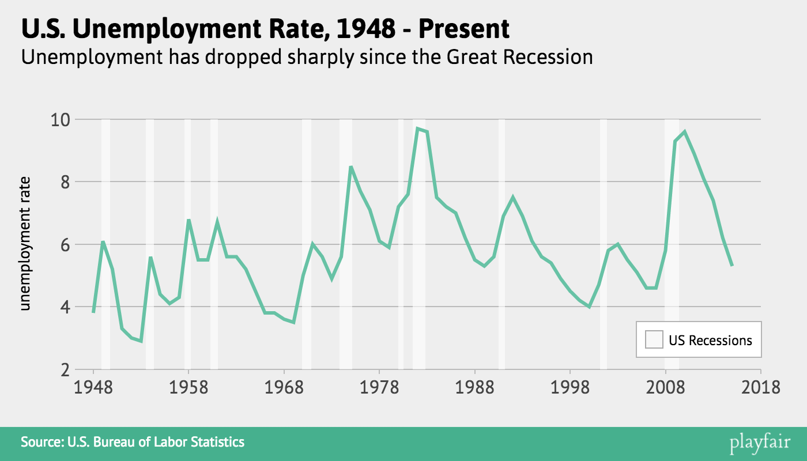
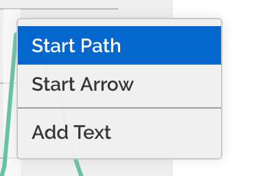
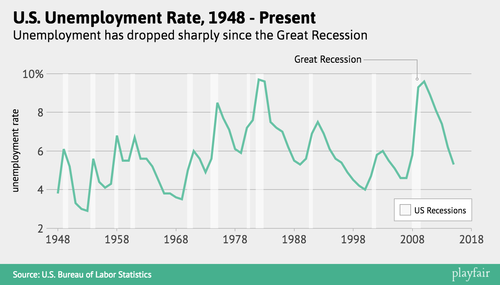

Very important disclaimer: Playfair is currently only compatible with Chrome.
Again, the hosted version of Playfair is available here: austinclemens.com/Playfair/playfair.html
Let's continue working with the chart in the previous tutorial. First, I want to change the key a little bit. We really don't need a key entry for the unemployment line, since it's the only line on the graph. So go to the Legend tab. In the Preview box, click the x on the line element to delete it, and move the shade element up into the top box by dragging it, so your Preview looks like this:
I also want to have a label for the recession shading so I'm going to go back to the Shading subtab and enter 'US Recessions' into the legend label box. Now I redraw the graph and then I can drag the floating key wherever I'd like it to be on the chart, so now I have this:
The last thing I want to do is change the color of the line and add an annotation to the graph. Changing the line color is easy. Just right-click on the line (you'll know you've selected the line because a shadow will appear behind it) and pick the color you want.
To add an annotation that labels the Great Recession, right-click anywhere inside the Great Recession shading block and choose Start Path. Then click again in an empty area to end the path. Next, right-click and select Add Text. This creates a text area that can be edited by double-clicking on it and typing as you normally would. The box to the left of the plotting area will show you the commands available to you for editing text. The last thing I'm going to do is double-click a y-axis label and add a percentage sign. This is the finished graph:
This brings us to a very very important thing to understand about Playfair: when you redraw a chart, you lose any annotations or adjustments you have made on the chart itself. If you want to keep your annotations, you need to instead click the button. You will still lose some modifications, like any color changes you made, but you will keep added text, paths, and arrow annotations.
Now you know most of the basics of using Playfair. There is one more important concept: creating grouped charts (more than one line or more than one point color). The next tutorial explains how you set up your data and tell Playfair you want a grouped chart.